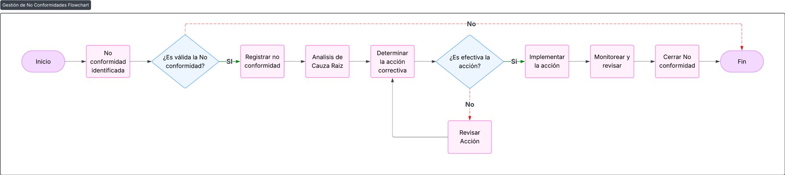

Procedimiento Verificación y Mejora Continua de la Seguridad de la Información
1 OBJETIVO
Asegurar que las políticas y controles de seguridad se cumplan, revisen y mejoren periódicamente, con foco en servidores on-premise (CATIA/NX, SIP), cumpliendo con los requisitos de ISO/IEC 27001:2022, TISAX y de clientes automotrices.
2 VERIFICACIÓN DE CUMPLIMIENTO
Herramientas y Métodos:
| Qué Verificar | Cómo | Frecuencia | Responsable |
|---|---|---|---|
| Políticas de Acceso | Auditoría de permisos en Active Directory (ej.: ¿Solo ingeniería accede a CATIA?). | Mensual | Admin TI |
| Cumplimiento Técnico | Scans con Nessus o OpenVAS (ej.: parches faltantes en Windows Server). | Trimestral | IT Manager |
| Requisitos de Clientes | Checklist BMW GS.11 (ej.: watermarking en CATIA). | Semestral | Responsable de Datos |
Ejemplo de Hallazgo:
- No conformidad: 2 empleados de Finanzas tenían acceso a archivos CATIA (🔴).
- Acción correctiva: Revocar accesos y capacitar al equipo.
3 REVISIONES PERIÓDICAS DE POLÍTICAS
Proceso:
- Evaluación:
- Revisar políticas vs. cambios en:
- Normativas (ej.: nuevo requisito de Mercedes).
- Infraestructura (ej.: migración a nuevo servidor).
- Revisar políticas vs. cambios en:
- Documentación:
- Acta de Revisión:
Fecha: 15/10/2025Política Evaluada: "Acceso a CATIA/NX".
Cambios:
- Añadir watermarking obligatorio (requerido por BMW).
Aprobado por: [Nombre del IT Manager].
- Comunicación:
- Enviar actualizaciones por email y capacitar a afectados.
Frecuencia:
- Políticas Críticas (ej.: CATIA): Anual + tras cambios mayores.
- Políticas Generales: Cada 2 años.
4 GESTIÓN DE NO CONFORMIDADES
Flujo de Corrección:

Diagrama de flujo de No Conformidades
Ejemplo:
| No Conformidad | Causa Raíz | Acción Correctiva | Plazo | Estado |
|---|---|---|---|---|
| Backup de SIP no probado en mas de 6 meses | Falta de procedimiento. | Implementar test trimestral. | 30 días | ✅ Cerrado |
5 VERIFICACIÓN TÉCNICA
Checklist para Servidores On-Premise:
| Control | Ejemplo (CATIA/NX) | Herramienta |
|---|---|---|
| Cifrado de datos | ¿BitLocker activo en servidor? | PowerShell |
| Configuraciones seguras | ¿SSH deshabilitado en puertos públicos? | Nmap. |
| Watermarking | ¿Siemens NX con módulo activo? | Validación manual. |
6 REGISTRO Y CONSERVACIÓN
Documentos Clave:
- Lista de No Conformidades:
- ID, fecha, descripción, responsable, estado.
- Actas de Revisión:
- Firmadas por dirección.
- Evidencias Técnicas:
- Reportes de scans (ej.: Nessus).
- Capturas de logs (ej.: acceso a CATIA).
Plazo de Conservación:
- Mínimo 3 años (requisito TISAX).
Plantillas Clave
A. Lista de No Conformidades
| ID | Descripción | Fecha | Responsable | Acción | Fecha Cierre |
|---|---|---|---|---|---|
| NC-001 | Backup de SIP no probado. | 10/10/2025 | Admin TI | Implementar test trimestral. | 15/11/2025 |
B. Acta de Revisión de Políticas
Política: "Uso Aceptable de Recursos IT".
Cambios:
- Prohibir WhatsApp para compartir diseños CATIA.
Firma del IT Manager: ________________________
Recomendaciones:
- Automatización: Usar Microsoft Compliance Manager para trackear cumplimiento.
- Ejemplos Clientes Automotrices específicos:
- BMW: Auditorías sorpresa.
- Mercedes: Reportes anuales de cumplimiento técnico.
- Integración: Vincular no conformidades a la matriz de riesgos.
7 REVISIONES DEL DOCUMENTO
| Rev. N° | Fecha | Descripción |
|---|---|---|
| 0 | 25/8/2025 | Primera Emisión del documento |
| 1 | 15/1/2026 | Revisión completa del documento |